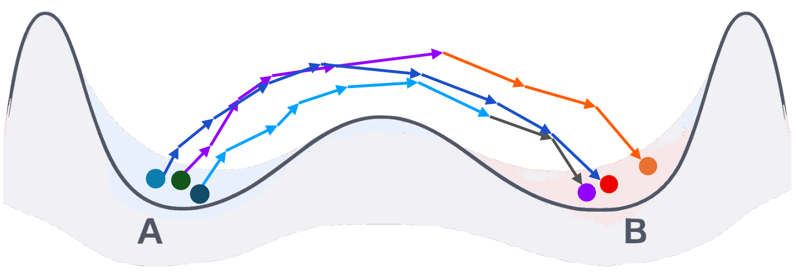
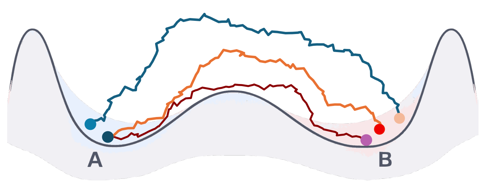

TLDR: We introduce action learning, which treats the stochastic action of a system as the learning target and recovers it from trajectory samples as a differentiable path space objective, reusable for inference, steering and sampling without retraining.
Understanding and controlling how systems evolve is central to science and engineering, where many problems are defined on trajectories rather than individual states. Existing learned methods often predict local dynamics or generate trajectories, while representative path inference, mechanism steering and constrained trajectory optimization require an objective on complete paths. We introduce LEAP (Learned Energy on Action Paths), which treats the stochastic action itself as the learning target and recovers it directly from trajectory samples. LEAP decomposes the unknown action to an evaluable reference process and learns the remaining path space correction from complete trajectories, yielding a differentiable objective on paths. Once learned, the same action can be reused for path ranking, representative path inference, mechanism tilting, constraints and sampling. Across stochastic transition, orbital and molecular systems, LEAP recovers physical drift from terminally selected trajectories, represents a nonadditive action correction induced by a persistent latent regime and reuses a fixed molecular action for completion, basin preferences, angular constraints and temperature transfer.
Understanding how systems move between states requires reasoning about the trajectories that connect them. Which paths realize a transition, which mechanisms are plausible, and which paths remain likely under perturbations or constraints? These questions need an objective on complete paths. When the dynamics are known, stochastic actions such as the Onsager–Machlup functional provide one. The action is a physical quantity. It assigns a scalar to every complete trajectory, and for a diffusion it adds up how far each step departs from the drift.
In many applications, however, we do not know the action. We instead observe trajectories from simulation or experiment, like molecular simulation traces, state transitions, policy rollouts or logs of a stochastic process. Learned methods often predict local dynamics or generate trajectories. These objects are useful, but they do not directly give the reusable path objective needed for downstream trajectory inference. We call the task of recovering an evaluable action from trajectory samples action learning.

(a) Local dynamics learning. Local transition laws induce a likelihood over complete trajectories.

(b) Trajectory action learning. LEAP learns relative path costs from complete trajectory comparisons.
LEAP needs trajectory samples for each context \(c\), such as endpoints, a terminal region or a horizon, but not the drift, potential or simulator likelihood. It anchors the unknown action to a tractable reference process and learns the remaining correction from complete trajectories.
The contrastive objective is minimized by the log density ratio of data to reference, up to a constant per context, and training never samples from the learned action. In structured settings, the correction recovers changes in the underlying dynamics, and more generally it can capture nonadditive interactions across transitions.
Because \(S_\theta\) is an action on complete trajectories, we can reuse it after training. The same learned object can rank candidate paths, infer representative trajectories, incorporate mechanism preferences, impose soft constraints and define trajectory distributions. Each new request adds a term to the action and changes the inference problem without retraining the model. If the learned action is within \(\varepsilon\) of the true one, an optimized path stays within \(2\varepsilon\) of optimal.
Our approach applies broadly to trajectories from dynamical systems, including molecular simulations, stochastic physical systems and logged sequential processes, and may help analyze and steer systems in science, robotics and planning.
Trajectories of the double well \(dX_t = b(X_t)\,dt + \sqrt{2D}\,dW_t\) with \(b(x) = x - x^3\) start at \(x_0 = -1\) and are kept only if \(x_T \in [0.9, 1.1]\) at \(T = 3\). Selecting on the final state changes the distribution of every step, so local regression fits the selected process rather than the original drift. LEAP compares the selected paths with a Brownian reference selected by the same window, which changes their path log likelihood ratio only by a constant. LEAP reaches drift MSE \((3.2 \pm 2.7) \times 10^{-4}\), against 0.7752 for cubic regression, whose basis contains the exact drift. With the learned potential fixed, it also infers near optimal paths to a new endpoint, with true path cost 0.2506 against the analytic 0.2500 at \(T = 16\).
An unobserved physical property, like an unknown mass, can stay fixed during a trajectory while its effect accumulates over the full path. In a 31 body orbital system initialized from JPL HORIZONS, we sample \(z \in \{-1, +1\}\) once per path and change the solar mass to \(m_\odot(1 + z\eta)\). After marginalizing \(z\), the exact correction is \(\sum_k m_k + \log\cosh(\sum_k d_k)\), which couples every transition of the path. Models that score one transition at a time, LEAP-Local and Transition NCE, stay at the constant prediction level (NRMSE 1.0013 and 1.0008). LEAP-Global sees the complete path with per step features of the nominal dynamics, including their sensitivity to the solar mass, but never \(z\). It reaches 0.2280 and recovers the hidden mass perturbation as \(1.02 \times 10^{-4}\), against the true \(1.04 \times 10^{-4}\). At 42 bodies and 256 transitions, 64,764 coordinates per path, it reaches 0.1107 while LEAP-Local stays at 1.0015.
Molecular trajectories are often analyzed in a few collective coordinates whose effective dynamics have no closed form. We learn one action for alanine dipeptide in its backbone angles \((\phi, \psi)\) from 613 reactive C7eq → C7ax trajectories of OpenMM Langevin simulations at 600 K. Keeping it fixed, we complete paths from a few observed states and add basin preferences and angular constraints, all without retraining. With the reference of the new temperature, the correction learned at 600 K also scores 500 K paths on par with a model trained at 500 K (AUROC 0.9579 and 0.9403 within each context).
LEAP treats the stochastic action as a reusable learning target for trajectory data. Learning an objective on path space enables a common interface between trajectory data and diverse downstream inference problems. Looking forward, we hope action learning encourages a broader view for trajectory modeling, shifting the focus to learning reusable objectives over complete paths.
LEAP requires overlap between the reference and trajectory distribution. The structured correction is exact for Gaussian Markov processes with shared diffusion, and state dependent diffusion requires more likelihood ratio terms. Our alanine experiments learn an effective action in \((\phi, \psi)\) instead of the full molecular action.
@article{liaw2026action,
author = {Liaw, Sarah and Du, Yuanqi and Du, Yilun},
title = {Action Learning for Scientific Simulations},
journal = {arXiv preprint},
year = {2026},
}